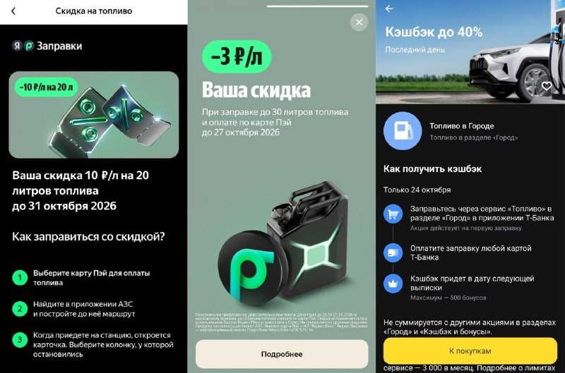

⛽️ Скидки на топливо начали оживать ...осталось найти топливо 🏦 В Т-Банке в кэшбэке дня — 40% , макс 500 на 1 заправку в сервисе Топливо (обычно дают новичкам сервиса) ⛽️ Яндекс Заправки могут предложить: ✓ -3 ₽/л , до 30л при оплате картой Пэй по 27.10.26 ✓ -10 ₽/л , до 20л по 31.10.26 (новичкам сервиса) А как у вас с топливом? взяла погонять авто на дизеле, так с АЗС рядом пропал и он. Теперь стоят обе тачки, хожу пешком. ✈️ Telegram | 🔵 MAX -